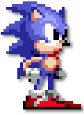
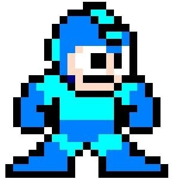
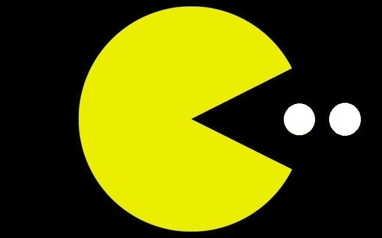

Mario

Mario (マリオ?) es un personaje ficticio en la franquicia de videojuegos homónima, diseñado por el japonés Shigeru Miyamoto para la compañía Nintendo. A partir de su aparición en videojuegos, series televisivas y películas, se ha convertido en el icono emblemático de Nintendo, llegando a ser uno de los personajes más famosos y conocidos de videojuegos de todos los tiempos, junto a su hermano menor Luigi, quien es su compañero ícono en diversos juegos y lo ayuda a cumplir su misión, y también ha sido el único protagonista en la saga inspirada en el universo de su hermano Mario.
Originalmente, Mario fue bautizado con el nombre de Jumpman («hombre salto» u «hombre saltador» en inglés) y apareció por primera vez en el videojuego Donkey Kong del año 1981. Fue en 1983 cuando su nombre cambió a Mario, en homenaje al nombre del propietario de las primeras oficinas de Nintendo of América, Mario Segali en ese tiempo, y de su singular parecido al personaje.
Fue hecho para ser un personaje únicamente de videojuegos virtuales de plataforma, como Super Mario Bros., Super Mario Land, Super Mario World, Super Mario 64, etc. También aparece en juegos que no son del género de plataformas, como en las series Mario Kart, Mario Party, Paper Mario, Super Smash Bros., etc.
Inicios
Su primera aparición fue dentro de un juego arcade titulado Donkey Kong del año 1981. Su participación fue bajo el nombre original de «Jumpman», cuya misión era rescatar a una chica llamada Pauline, la «damisela en apuros». El argumento describía el secuestro de la misma por un gorila llamado Donkey Kong. El juego consistía en trasladar a Jumpman (Mario) saltando, esquivando las bolas de fuego, barriles y otros objetos más y llegar a la cima de la estructura donde se encontraban Pauline y Donkey Kong y así terminar y continuar al siguiente nivel.
En 1982, apareció el juego Donkey Kong Jr., donde el hijo de Donkey Kong tiene que rescatar a su padre de una jaula custodiada por Mario (es el único juego en donde Mario hace el rol de villano).
En 1983, Mario fue acompañado por su hermano Luigi en un videojuego llamado Mario Bros. Aunque antes había aparecido como carpintero, Mario se convirtió en fontanero (gasfítero), pues su nueva misión era exterminar plagas que salían por tuberías. Jumpman fue renombrado Mario por Mario Segali, el entonces propietario de las oficinas de la compañía. De acuerdo al equipo diseñador de Nintendo, Segali y Jumpman tenían características físicas muy similares entre sí, por lo que fue a partir de entonces que reemplazaron el nombre -Jumpman-, por el de Mario.
Como la tecnología usada en esa época era muy «primitiva», los diseñadores de Mario no podían animarlo perfectamente en cada uno de sus movimientos: algunas veces desaparecían alguna de las extremidades del personaje, o Mario saltaba y atravesaba muros. Debido a ello, se optó por agregarle ciertos detalles para solucionar dichos problemas técnicos, fue entonces cuando Mario comenzó a contar con camisa interior, guantes, sombrero y bigote de colores sólidos; elementos que figurarían en las siguientes adaptaciones, dándole un toque distintivo al personaje también con un overol de mezclilla azul con botones amarillos, guantes blancos, una camisa de color roja, una gorra roja con una letra "M" grabada en un círculo blanco y botas marrones.
En 1985 fue lanzado el juego Super Mario Bros. para la consola Nintendo Entertainment System (NES). En este juego destaca que por primera vez aparece la Princesa Peach (conocida como Princesa Toadstool en esa época) como la damisela en apuros, también aparece por primera vez Bowser (conocido como Rey Koopa en esa época) como el antagonista principal del juego, la historia de este juego es un modelo de próximos juegos de plataformas de Mario. En la historia, Bowser secuestra a la princesa y convierte a todos los personajes del Reino Champiñón en bloques, enemigos y demás cosas. Mario tiene que pasar por los siete mundos y en cada castillo hay un Bowser falso que luego de ser derrotado, aparece un Toad que le dice a Mario que la princesa se encuentra en otro castillo. Cuando llega al castillo del octavo mundo y Bowser es derrotado, Mario o Luigi liberan a la Princesa Peach. Mario tiene la ayuda del «superchampiñón», que le da la habilidad de ser Super Mario y derrotar enemigos, mientras que la «flor de fuego» le da la habilidad de lanzar bolas de fuego, transformándose en Mario de Fuego.
Sonic
Sonic the Hedgehog (ソニック・ザ・ヘッジホッグ? Sonikku za Hejjihoggu, lit. Sonic el erizo) él es un personaje de videojuegos y también la mascota de Sega. Su primera aparición fue en 1991 en Rad Mobile como el adorno de un auto (para hacer publicidad). Sonic se caracteriza por ser súper rápido (en varios medios se le conoce como el erizo más rápido del mundo), teniendo varias habilidades que le permiten aumentar su velocidad y otras cosas.
Concepto y Creación
En abril de 1990, Sega pidió un juego capaz de vender más de un millón de copias y un personaje que pudiera competir contra la mascota de Nintendo, Mario, además de sustituir a Alex Kid como mascota de la compañía. Varios diseños fueron presentados por AM8 y su departamento de desarrollo, incluyendo un armadillo (que se desarrolló más tarde como Mighty the Armadillo), un perro, un humano de gran tamaño en pijama (que más tarde sería la base de diseño del Doctor Eggman), y un conejo (con la intención de utilizar las orejas extensible para recoger objetos, estos aspectos se incorporaron más tarde en Ristar, y se incorporó más tarde a Sonic the Werehog)
Finalmente, un erizo, cuyo color se basa en el logotipo de SEGA, las hebillas de sus zapatos sobre la base de "Michael Jackson", el color de su calzado con base a "Santa Claus"
Su personalidad, en cambio, fue inspirado directamente por el futuro presidente de los Estados Unidos, Bill Clinton, quien encarna Oshima, sentía una sensibilidad moderna de querer hacer las cosas de inmediato, enderezar los entuertos en que se presentaron en lugar de dejarlos, y éste se quedó inicialmente con nombre en código "Mr. Needlemouse", fue elegida como la nueva mascota
La edad precisa de Sonic, peso, talla y otras características físicas varían dependiendo de la continuidad en la que aparece y el estilo en el que se dibuja. En los juegos de vídeo, el diseño original de Sonic por Naoto Oshima fue bastante breve e infantil (tal vez porque tenía 10 años de edad en el momento de su debut), con punta el pelo corto, un cuerpo redondo, un aumento en la espalda, y sin iris visible. Las ilustraciones con este diseño fueron dibujadas por Akira Watanabe, como se muestra en la ilustración del paquete para Sonic the Hedgehog (1991), y videojuegos de Sonic más destacados que salieron posteriormente usando el mismo diseño.
Megaman
Mega Man, conocido en Japón como Rockman (ロックマン Rokkuman?, Trad. Hombre Rock, derivado de la frase "Rock 'n Roll"), originalmente construido bajo el nombre de Rock (ロック Rokku?, también referido como Mega), apodado "El Bombardero Azul" por los fanáticos, es el protagonista de la Saga Clásica de Mega Man, referido como "Mega Man Original", de la franquicia de videojuegos Mega Man desarrollada por Capcom desde 1987. El diseño original de Mega Man fue creado por Akira Kitamura (acreditado bajo el seudónimo de "A.K.") y re-elaborado por Keiji Inafune. Siendo desde entonces, la mascota de la compañia Capcom y uno de los iconos más reconocidos de la industria de los videojuegos. Originalmente, siendo exclusivo de la consola Nintendo Entertainment System ha evolucionado cubriendo casi todas las consolas existentes hasta la actualidad.
El principal rol de Mega Man se centra en su eterna batalla para detener al malvado científico loco, el Dr. Wily y su cada dia más creciente ejército de robots, y parar su ambición de conquistar al mundo, gracias a su voluntad y buenas intenciones. Utilizando su arma principal, el Mega Buster, un brazo-cañon que se puede adaptar a las Armas Especiales de los Robot Masters que derrota, mientras viaja alrededor del mundo con tal objetivo. Con la constante ayuda de su "padre", el Dr. Light y sus compañeros robóticos, Mega Man lucha por la victoria y conseguir su principal objetivo, "LA PAZ ETERNA".
Pacman
Pac-Man (パックマン Pakku Man?), también conocido como Comecocos en España, es un videojuego arcade creado por el diseñador de videojuegos Toru Iwatani de la empresa Namco (basado supuestamente en la forma de una pizza con un trozo faltante), y distribuido por Midway Games al mercado estadounidense a principios de los años 1980.
Desde que Pac-Man fue lanzado el 21 de mayo de 1980, fue un éxito. Se convirtió en un fenómeno mundial en la industria de los videojuegos, llegó a tener el Récord Guiness del videojuego de arcade más exitoso de todos los tiempos con un total de 293.822 máquinas vendidas de 1981 a 1987 y acabó con el dominio de Space Invaders, donde la 'acción predominante era shoot-em-up (disparar a todos)' para reemplazarla por un formato único, más humorístico y poco violento que gustó a muchísimas personas.
Origen del nombre
El nombre del juego proviene de la onomatopeya japonesa paku (パク?), sonido que se produce al abrir y cerrar la boca. El nombre se romanizó como Puck-Man en Japón (en inglés, puck se pronuncia pac en español). Sin embargo, Midway lo modificó a Pac-Man para el mercado estadounidense (y posteriormente otros mercados occidentales) debido a que la gente podría cambiar la «P» de Puck-Man, por una «F», formando una palabra soez en inglés.
En España, este juego es coloquialmente conocido como Comecocos debido a que se anunciaba de esta manera en televisión la versión para Atari 2600 a principios de los años 1980 aunque su nombre oficial seguía siendo Pac-Man.3 Se popularizó tanto entre la población española que la empresa MB tituló de esta manera la versión española de su juego de mesa basado en Pac-Man.